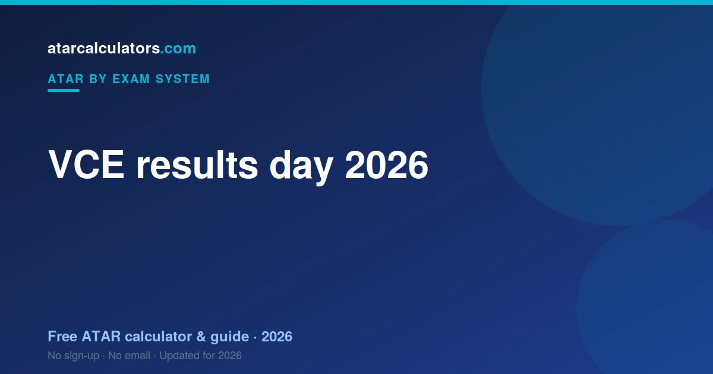

VCE results for 2026 are released in mid-December 2026 by VCAA, usually early in the morning. Your ATAR, from VTAC, is released around the same time. First-round university offers follow in January. VCAA and VTAC confirm the exact dates on their websites closer to results day.
Key takeaways
- VCE results for 2026 come out in mid-December 2026.
- They are released by VCAA, usually early in the morning.
- Your ATAR, from VTAC, follows around the same time.
- First-round university offers follow in January.
- VCAA and VTAC confirm the exact dates beforehand.
- Have your VCAA and VTAC logins ready before the day.

When do 2026 VCE results come out?
VCE results are released in mid-December each year. For 2026, expect your results in mid-December 2026, on a weekday morning. The pattern is very consistent year to year.
VCAA runs the release and publishes the exact date and time in the weeks beforehand. So plan for mid-December, and check the VCAA website for the confirmed date closer to the day.
When does the ATAR come out?
On results day you get two different things: your VCE study scores from VCAA, and your ATAR from VTAC. They arrive together and mean different things.
How you receive your results
Your study scores are out of 50. Your ATAR is a rank out of 99.95 built from your Primary Four plus 10% of your fifth and sixth.
When do university offers follow?
Victorian offers follow through VTAC in rounds. Your first-round offer depends on your preferences and your selection rank.
How to prepare for results day
Two things help. First, check your VCAA and VTAC logins and contact details early. Second, have a plan for both outcomes, decided while you are calm.
Know what you will do if your ATAR beats your target, and what your backup options are if it falls short. Deciding in advance takes real pressure off the day. See the Victoria results timeline for more.
Why results can surprise you
If a study score surprises you, remember scaling happens after VCAA sets it. A 38 in a strong scaler is not the same as a 38 in Further.
Estimate your ATAR before results
You do not have to wait until mid-December to get a sense of where you stand. Our VCE ATAR calculator estimates your ATAR from your predicted or current results, using scaling.
An estimate is a guide, not your official result, but it helps you plan your preferences before the real number arrives.
Where to check your results
Check your VCE results through VCAA and your ATAR through VTAC. Two bodies, two logins, one morning.
What your results will show
Notice which four studies became your Primary Four. It is often not the four you expected, because scaling reorders them.
After results: your next steps
After results day, VTAC change-of-preference is the lever you still have. It is short and it matters more than the results now do.
Coping with the wait
The wait between results and offers is real. Use it for change of preference rather than for recalculating your aggregate.
A quick results-day checklist
Results-day checklist for Victoria: get your study scores, get your ATAR, check your Primary Four, then look hard at your VTAC preferences.
Beyond results day
The day after matters more than the day itself. Change of preference closes fast, and it is the last decision you control.
Common questions
When are 2026 VCE results released?
VCE results for 2026 are released in mid-December 2026 by VCAA, on a weekday morning. VCAA confirms the exact date on its website closer to results day.
What time are VCE results out?
Results are usually released early in the morning. VCAA publishes the exact time beforehand, and your ATAR from VTAC follows around the same time.
How will I get my VCE results?
You receive your VCE results through VCAA’s online service and your ATAR through your VTAC account, often with an SMS or email as well. Check your logins before results day.
When does the ATAR come out vs subject results?
Your VCE subject results from VCAA and your ATAR from VTAC are released around the same time, close together, in mid-December.